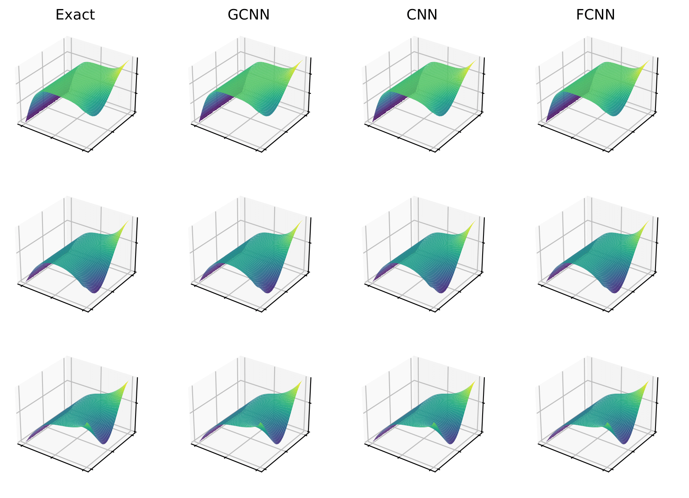

Comparing Neural Architectures for Reduced-Order Modeling
 \(\newcommand{\bb}[1]{\mathbf{#1}} \newcommand{\nn}[1]{\left\|#1\right\|} \newcommand{\mmu}{\bm{\mu}} \newcommand{\IP}[3]{\left\langle #2, #3\right\rangle_{#1}} \newcommand{\kdf}{\mathrm{ker}\,f'} \newcommand{\idf}{\mathrm{im}\,f'} \DeclareMathOperator*{\argmin}{arg\,min}\)
High-fidelity computational models are indispensable tools for the prediction and analysis of physical systems which are governed by parameterized partial differential equations (PDEs). As more and more industries are relying on simulated results to inform their daily operations, the significant amount of computational resources demanded by such models is becoming increasingly prohibitive. Indeed, actions which increase model fidelity such as refining the spatio-temporal resolution can also lead to an explosion of dimensionality, making use of the full-order model (FOM) infeasible in real-time or many-query scenarios. To remedy this, emphasis has been placed on reduced-order models (ROMs) which approximate the high-fidelity, full-order models at any desired configuration of parameters.
This project investigates the performance of different neural network autoencoders on ROM tasks such as data compression and the prediction of new solutions given parameters. In particular, we propose a novel autoencoder architecture based on graph convolution and compare its performance to established autoencoders based on standard convolutional and fully connected networks. Pictured below, our autoencoder-ROM system is entirely data-driven and comprised of two pieces: the graph autoencoder which encodes and decodes PDE snapshot data, and a small fully connected network which predicts encoded solutions given a set of parameters.

Comparisons on benchmark problems are performed, and results indicate that the superior autoencoder architecture for a given ROM application is highly dependent on the size of the latent space and the structure of the snapshot data, with the proposed GCN2-based architecture demonstrating benefits on data with irregular connectivity and when the latent space is not too large.
Relevant Publications
Vikash Chaurasia, Max Gunzburger, Lili Ju, Zhu Wang. Neural Architectures for Data Compression and Reduced-Order Modeling. Preprint version available here.